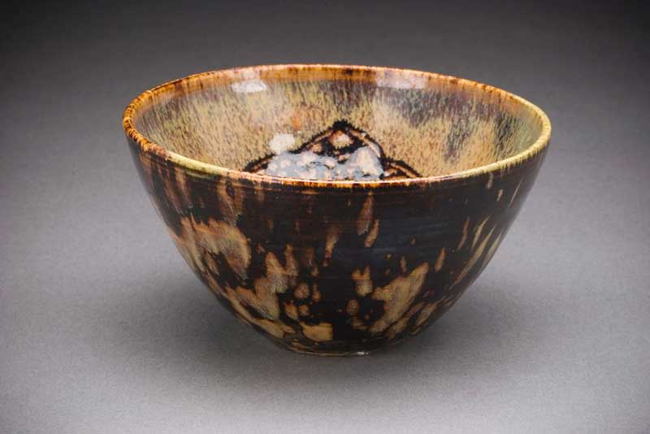

Tea plants are native to East Asia, and probably originated in the borderlands of north Burma and southwestern China.
Tea drinking may have begun in the region of Yunnan region, when it was used for medicinal purposes. It is also believed that in Sichuan, "people began to boil tea leaves for consumption into a concentrated liquid without the addition of other leaves or herbs, thereby using tea as a bitter yet stimulating drink, rather than as a medicinal concoction.”
Chinese legends attribute the invention of tea to the mythical Shennong (in central and northern China) in 2737 BC although evidence suggests that tea drinking may have been introduced from the southwest of China (Sichuan/Yunnan area). The earliest written records of tea come from China. The word tú 荼 appears in the Shijing and other ancient texts to signify a kind of "bitter vegetable" (苦菜), and it is possible that it referred to many different plants such as sowthistle, chicory, or smartweed, as well as tea. In the Chronicles of Huayang, it was recorded that the Ba people in Sichuan presented tu to the Zhou king. The Qin later conquered the state of Ba and its neighbour Shu, and according to the 17th century scholar Gu Yanwu who wrote in Ri Zhi Lu (日知錄): "It was after the Qin had taken Shu that they learned how to drink tea." Another possible early reference to tea is found in a letter written by the Qin Dynasty general Liu Kun who requested that some "real tea" to be sent to him.
The earliest known physical evidence of tea was discovered in 2016 in the mausoleum of Emperor Jing of Han in Xi'an, indicating that tea from the genus Camellia was drunk by Han Dynasty emperors as early as the 2nd century BC. The Han dynasty work, "The Contract for a Youth", written by Wang Bao in 59 BC, contains the first known reference to boiling tea. Among the tasks listed to be undertaken by the youth, the contract states that "he shall boil tea and fill the utensils" and "he shall buy tea at Wuyang". The first record of tea cultivation is also dated to this period (the reign of Emperor Xuan of Han), during which tea was cultivated on Meng Mountain (蒙山) near Chengdu. Another early credible record of tea drinking dates to the third century AD, in a medical text by Hua Tuo, who stated, "to drink bitter t'u constantly makes one think better." However, before the mid-8th century Tang dynasty, tea-drinking was primarily a southern Chinese practice. It became widely popular during the Tang Dynasty, when it was spread to Korea, Japan, and Vietnam.
Through the centuries, a variety of techniques for processing tea, and a number of different forms of tea, were developed. During the Tang dynasty, tea was steamed, then pounded and shaped into cake form, while in the Song dynasty, loose-leaf tea was developed and became popular. During the Yuan and Ming dynasties, unoxidized tea leaves were first pan-fried, then rolled and dried, a process that stops the oxidation process that turns the leaves dark, thereby allowing tea to remain green. In the 15th century, oolong tea, in which the leaves were allowed to partially oxidize before pan-frying, was developed. Western tastes, however, favoured the fully oxidized black tea, and the leaves were allowed to oxidize further. Yellow tea was an accidental discovery in the production of green tea during the Ming dynasty, when apparently sloppy practices allowed the leaves to turn yellow, but yielded a different flavour as a result.
Tea was first introduced to Portuguese priests and merchants in China during the 16th century, at which time it was termed chá. The earliest European reference to tea, written as Chiai, came from Delle navigationi e viaggi written by a Venetian, Giambattista Ramusio, in 1545. The first recorded shipment of tea by a European nation was in 1607 when the Dutch East India Company moved a cargo of tea from Macao to Java, then two years later, the Dutch bought the first assignment of tea which was from Hirado in Japan to be shipped to Europe. Tea became a fashionable drink in The Hague in the Netherlands, and the Dutch introduced the drink to Germany, France and across the Atlantic to New York.
The first record of tea in English came from a letter written by Richard Wickham, who ran an East India Company office in Japan, writing to a merchant in Macao requesting "the best sort of chaw" in 1615. Peter Mundy, a traveller and merchant who came across tea in Fujian in 1637, wrote, "chaa – only water with a kind of herb boyled in it ". Tea was sold in a coffee house in London in 1657, and Catherine of Braganza took the tea-drinking habit to the British court when she married Charles II in 1662. Tea, however, was not widely consumed in Britain until the 18th century, and remained expensive until the latter part of that period. Tea smuggling during the 18th century led to the general public being able to afford and consume tea. The British government removed the tax on tea, thereby eliminating the smuggling trade by 1785. The price of tea in Europe fell steadily during the 19th century, especially after Indian tea began to arrive in large quantities; by the late 19th century tea had become an everyday beverage for all levels of society. The popularity of tea also informed a number of historical events – the Tea Act of 1773 provoked the Boston Tea Party that escalated into the American Revolution.
Chinese small leaf type tea was introduced into India in 1836 by the British in an attempt to break the Chinese monopoly on tea. In 1841, Archibald Campbell brought seeds of Chinese tea from the Kumaun region and experimented with planting tea in Darjeeling. The Alubari tea garden was opened in 1856 and Darjeeling tea began to be produced. In 1848, Robert Fortune was sent by the East India Company on a mission to China to bring the tea plant back to Great Britain. The Chinese tea plants he brought back were introduced to the Himalayas, though most did not survive. The British had discovered that a different variety of tea was endemic to Assam and the northeast region of India and that it was used by the local Singpho people, and these were then grown instead of the Chinese tea plant and then were subsequently hybridized with Chinese small leaf type tea as well as likely closely related wild tea species. Using the Chinese planting and cultivation techniques, the British launched a tea industry by offering land in Assam to any European who agreed to cultivate it for export. Tea became widely popular in India in the 1950s because of a successful advertising campaign by the India Tea Board.